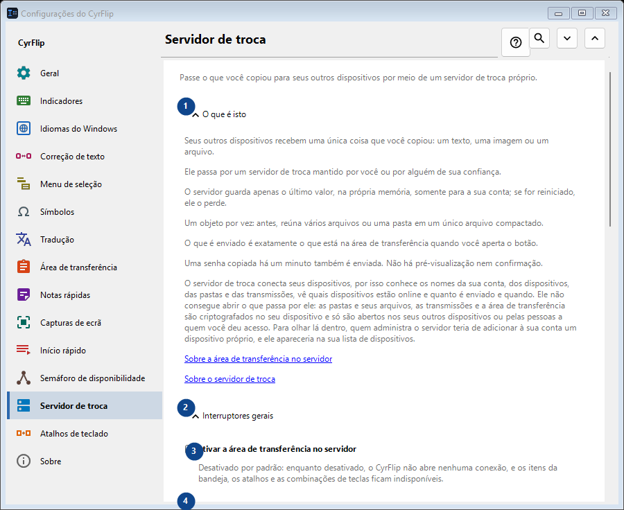
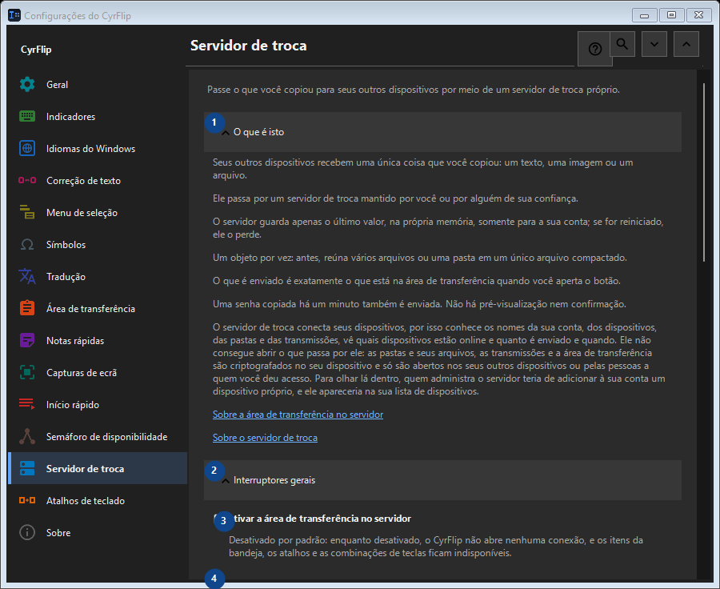

Servidor de troca
Para que serve
Passe o que você copiou para seus outros dispositivos por meio de um servidor de troca próprio.


Ordem de utilização
As definições são aplicadas de imediato. Não existe uma ordem obrigatória; use os grupos abaixo.
Elementos
1. O que é isto
Use este comando para a ação indicada. Leia qualquer confirmação antes de aceitar.
Os seus atalhos2. Interruptores gerais
Use este comando para a ação indicada. Leia qualquer confirmação antes de aceitar.
Os seus atalhos3. Ativar a área de transferência no servidor
Desativado por padrão: enquanto desativado, o CyrFlip não abre nenhuma conexão, e os itens da bandeja, os atalhos e as combinações de teclas ficam indisponíveis.
Os seus atalhos4. Contas
Use este comando para a ação indicada. Leia qualquer confirmação antes de aceitar.
Os seus atalhos5. Adicionar conta..
Indisponível enquanto «Ativar a área de transferência no servidor» estiver desligado: ligue primeiro esse interruptor. Este elemento não está disponível. Ative primeiro a função ou selecione uma entrada.
Os seus atalhos6. Teclas de atalho e atalhos
Use este comando para a ação indicada. Leia qualquer confirmação antes de aceitar.
Os seus atalhos7. Enviar área de transferência para o servidor
Indisponível enquanto «Ativar a área de transferência no servidor» estiver desligado: ligue primeiro esse interruptor. Este elemento não está disponível. Ative primeiro a função ou selecione uma entrada.
Os seus atalhos8. Alterar - Enviar área de transferência para o servidor
Indisponível enquanto «Ativar a área de transferência no servidor» estiver desligado: ligue primeiro esse interruptor. Este elemento não está disponível. Ative primeiro a função ou selecione uma entrada.
Os seus atalhos9. Obter área de transferência do servidor
Indisponível enquanto «Ativar a área de transferência no servidor» estiver desligado: ligue primeiro esse interruptor. Este elemento não está disponível. Ative primeiro a função ou selecione uma entrada.
Os seus atalhos10. Alterar - Obter área de transferência do servidor
Indisponível enquanto «Ativar a área de transferência no servidor» estiver desligado: ligue primeiro esse interruptor. Este elemento não está disponível. Ative primeiro a função ou selecione uma entrada.
Os seus atalhos11. Colocar “Enviar” na área de trabalho
Indisponível enquanto «Ativar a área de transferência no servidor» estiver desligado: ligue primeiro esse interruptor. Este elemento não está disponível. Ative primeiro a função ou selecione uma entrada.
Os seus atalhos12. Colocar “Obter” na área de trabalho
Indisponível enquanto «Ativar a área de transferência no servidor» estiver desligado: ligue primeiro esse interruptor. Este elemento não está disponível. Ative primeiro a função ou selecione uma entrada.
Os seus atalhos13. Arquivos recebidos
Use este comando para a ação indicada. Leia qualquer confirmação antes de aceitar.
Os seus atalhos14. Pasta para arquivos recebidos do servidor
Indisponível enquanto «Ativar a área de transferência no servidor» estiver desligado: ligue primeiro esse interruptor. Este elemento não está disponível. Ative primeiro a função ou selecione uma entrada.
Os seus atalhos15. Escolher - Pasta para arquivos recebidos do servidor
Indisponível enquanto «Ativar a área de transferência no servidor» estiver desligado: ligue primeiro esse interruptor. Este elemento não está disponível. Ative primeiro a função ou selecione uma entrada.
Os seus atalhos16. Abrir pasta - Pasta para arquivos recebidos do servidor
Indisponível enquanto «Ativar a área de transferência no servidor» estiver desligado: ligue primeiro esse interruptor. Este elemento não está disponível. Ative primeiro a função ou selecione uma entrada.
Os seus atalhos